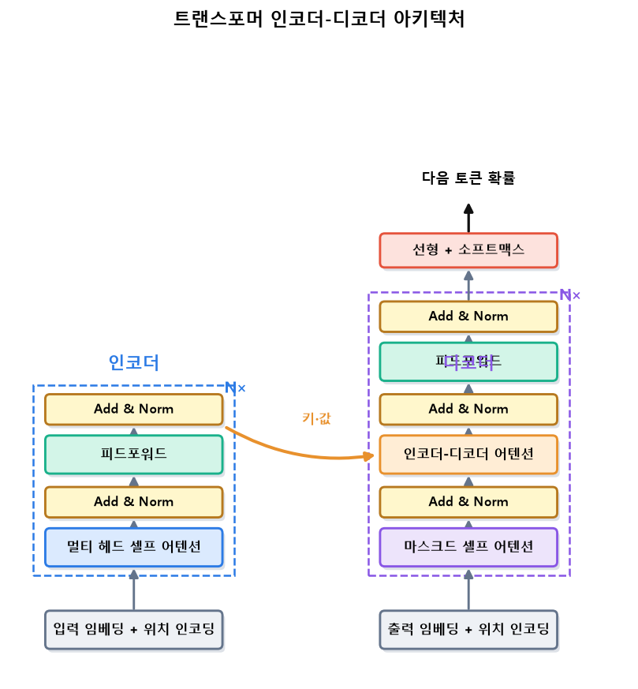
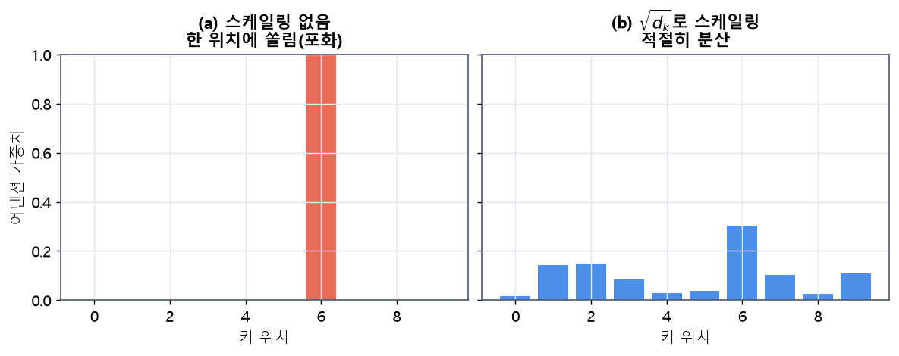
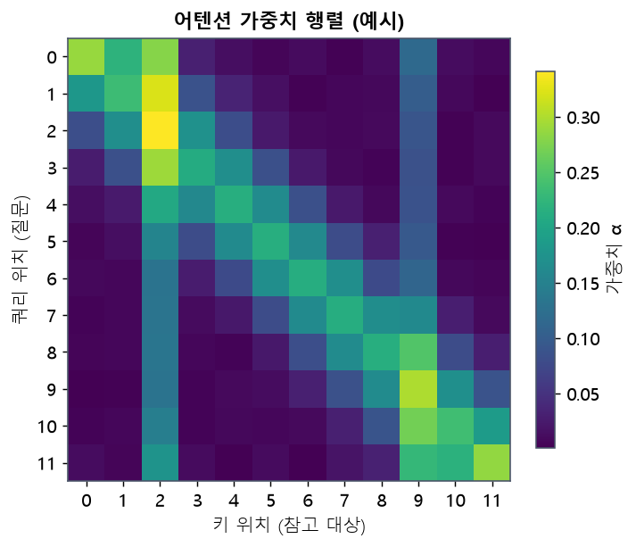
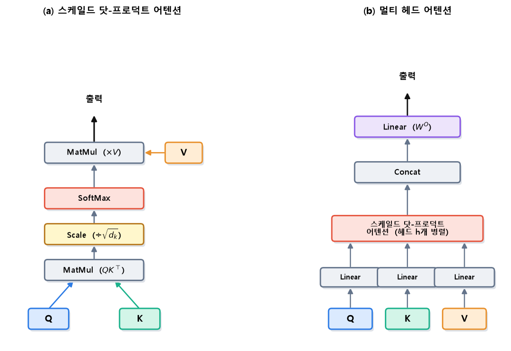
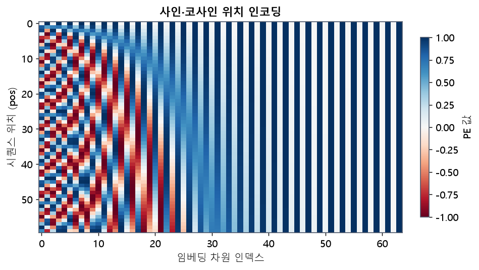
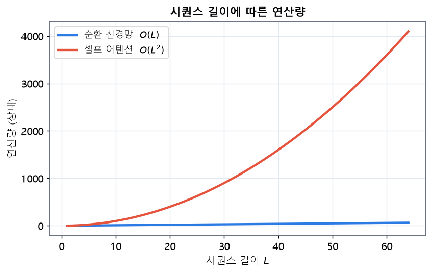
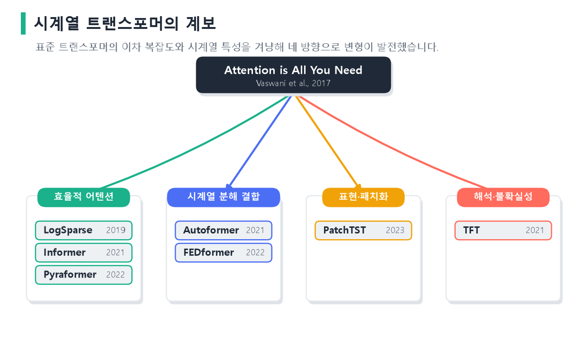

flowchart LR
RNN["순환 신경망<br/>시점별 순차 처리"] -->|"어텐션 추가"| SEQ2SEQ["seq2seq + 어텐션<br/>정렬 학습"]
SEQ2SEQ -->|"순환 제거"| TF["트랜스포머<br/>어텐션만으로 병렬 처리"]
style TF fill:#bbf7d0
10 Transformer 기반 시계열 모델링
이 장은 순환 없이 오직 어텐션만으로 시퀀스를 처리하는 트랜스포머를 다룹니다. 순환 신경망의 한계에서 출발해 셀프 어텐션과 멀티 헤드 어텐션의 연산을 수식으로 자세히 풀고, 순서 정보를 주입하는 위치 인코딩을 여러 방식으로 비교합니다. 인코더와 디코더 각각의 역할을 정리한 뒤, 트랜스포머를 시계열 예측에 적용하는 방법과 대표적인 시계열 특화 변형 모델들을 소개합니다.
10.1 순환 신경망의 한계와 트랜스포머의 등장
3장의 LSTM·GRU는 장기 의존성 문제를 상당히 완화했지만, 순환 구조 자체에서 오는 두 가지 근본 한계가 남습니다.
- 순차 처리로 인한 병렬화 불가: 시점 \(t\)의 은닉 상태는 \(t-1\)의 결과에 의존하므로, 시퀀스를 한 시점씩 순서대로 계산해야 합니다. 이는 GPU의 병렬 연산 능력을 충분히 활용하지 못하게 합니다.
- 긴 거리 정보 전달의 병목: 멀리 떨어진 두 시점을 연결하려면 그 사이의 모든 은닉 상태를 거쳐야 합니다. 경로가 길수록 정보가 희석됩니다.
어텐션 메커니즘은 원래 이 병목을 완화하기 위해 순환 신경망 위에 얹혀 등장했습니다. 기존 순환 신경망 기반 번역 모델은 입력 문장 전체를 하나의 고정 크기 벡터로 압축한 뒤 그것만으로 번역을 생성했는데, 문장이 길어지면 이 하나의 벡터에 모든 정보를 담기 어려워 성능이 떨어졌습니다. 바다나우 등은 이 문제를 해결하려고, 디코더가 매 시점 인코더의 모든 위치를 참조해 지금 필요한 부분에 정렬(alignment)하는 어텐션을 제안했습니다(Bahdanau 기타, 2015). 이제 디코더는 하나의 압축 벡터가 아니라 입력 전체를 필요에 따라 골라볼 수 있게 되었습니다. 루옹 등이 이 아이디어를 여러 형태로 다듬으며 어텐션은 시퀀스 모델의 표준 요소로 자리 잡았습니다(Luong 기타, 2015). 2017년 바스와니 등은 여기서 한 걸음 더 나아가, 순환을 완전히 제거하고 어텐션만으로 시퀀스를 처리하는 트랜스포머를 제안했습니다(Vaswani 기타, 2017).
트랜스포머는 임의의 두 위치를 한 번의 연산으로 직접 연결하고, 전체 시퀀스를 동시에 처리해 병렬성이 뛰어납니다. 이 성질 덕분에 대규모 데이터로 사전학습하는 BERT(Devlin 기타, 2019), GPT(Radford 기타, 2019), 이미지의 ViT(Dosovitskiy 기타, 2021)까지 확장되었습니다.
두 접근의 차이를 조금 더 구체적으로 보겠습니다. 순환 신경망에서 문장의 첫 단어 정보가 마지막 단어에 도달하려면, 그 사이 모든 시점의 은닉 상태를 순서대로 통과해야 합니다. 길이가 100이면 100단계를 거쳐야 하고, 그 과정에서 정보가 희석되거나 소실됩니다. 반면 셀프 어텐션에서는 첫 단어와 마지막 단어가 어텐션 한 번으로 직접 이어지므로, 거리가 아무리 멀어도 정보 전달 경로는 항상 한 단계입니다. 또한 순환 신경망은 시점을 순서대로 처리해야 해서 GPU의 수천 코어를 놀리지만, 트랜스포머는 모든 위치를 동시에 계산하므로 병렬 하드웨어를 완전히 활용합니다. “순차 처리의 병목”과 “장거리 전달의 병목”이라는 순환 신경망의 두 약점을, 트랜스포머는 어텐션이라는 하나의 메커니즘으로 동시에 해결한 것입니다.
10.2 트랜스포머의 전체 구조
원 논문의 트랜스포머는 인코더-디코더 구조입니다. 인코더는 입력 시퀀스를 문맥이 반영된 표현으로 변환하고, 디코더는 그 표현과 지금까지 생성한 출력을 바탕으로 다음 토큰을 만듭니다. 전체 아키텍처는 그림 4.1과 같습니다.

그림 4.1 트랜스포머 인코더-디코더 아키텍처. 인코더 블록(왼쪽)은 멀티 헤드 셀프 어텐션과 피드포워드를 각각 Add & Norm으로 감싸 \(N\)번 반복합니다. 디코더 블록(오른쪽)은 여기에 미래를 가리는 마스크드 셀프 어텐션과, 인코더 출력을 키·값으로 참조하는 인코더-디코더 어텐션을 더합니다. 마지막 선형 + 소프트맥스가 다음 토큰의 확률을 냅니다.
각 인코더·디코더 블록은 잔차 연결(residual connection)(He 기타, 2016)과 층 정규화(layer normalization)(Ba 기타, 2016)로 감싸여 있습니다. 잔차 연결은 입력을 출력에 더해 기울기 흐름을 돕고, 층 정규화는 각 위치의 특성을 정규화해 학습을 안정화합니다. 정규화를 블록 앞에 두는 Pre-LN 방식이 학습을 더 안정시킨다는 연구도 있습니다(Xiong 기타, 2020).
10.3 셀프 어텐션과 쿼리·키·값
트랜스포머의 심장은 셀프 어텐션(self-attention)입니다. 시퀀스의 각 위치가 자기 자신을 포함한 모든 위치를 바라보며, 무엇에 주목할지를 스스로 결정합니다.
10.3.1 쿼리, 키, 값의 의미
각 입력 벡터로부터 세 가지 벡터를 만듭니다. 이는 정보 검색의 비유로 이해하면 명확합니다.
- 쿼리(Query) \(\mathbf{q}\): “나는 무엇을 찾고 있는가”—현재 위치가 던지는 질문.
- 키(Key) \(\mathbf{k}\): “나는 무엇을 담고 있는가”—각 위치가 내거는 색인.
- 값(Value) \(\mathbf{v}\): “실제로 전달할 내용”—주목받았을 때 넘겨줄 정보.
입력 행렬 \(X\in\mathbb{R}^{T\times d}\)에 학습 가능한 가중치를 곱해 셋을 만듭니다.
\[ Q = XW^Q, \qquad K = XW^K, \qquad V = XW^V. \]
여기서 \(W^Q, W^K, W^V\)는 학습되는 투영 행렬입니다. 같은 입력 \(X\)에서 출발하지만 서로 다른 세 행렬을 곱하므로, 하나의 입력이 “질문용”, “색인용”, “내용용”이라는 세 가지 다른 역할의 벡터로 변환됩니다. 셀프 어텐션이라는 이름은 쿼리·키·값이 모두 같은 시퀀스에서 나온다는 데서 붙었습니다. 반면 디코더의 인코더-디코더 어텐션에서는 쿼리는 디코더에서, 키와 값은 인코더에서 나오는데, 이를 교차 어텐션이라 부릅니다. 어느 경우든 연산의 형태는 동일하고, 다만 쿼리·키·값이 어디서 오는가만 다릅니다. 이 세 행렬이 학습을 통해 조정되면서, 모델은 “무엇을 기준으로 어디에 주목할지”를 데이터로부터 스스로 배웁니다.
쿼리와 키의 유사도가 클수록 그 위치의 값을 더 많이 가져옵니다. “질문(쿼리)에 잘 맞는 색인(키)을 가진 위치의 내용(값)을 많이 참고한다”는 것이 핵심 직관입니다.
이 구조는 데이터베이스 검색에 비유하면 명확합니다. 일반적인 딕셔너리 검색은 쿼리와 키가 정확히 일치하는 하나의 값만 꺼냅니다. 어텐션은 이를 부드럽게 만든 것으로, 쿼리와 모든 키의 유사도에 비례해 여러 값을 가중 평균해 꺼냅니다. 즉 “가장 비슷한 하나”가 아니라 “비슷한 정도에 따라 섞은 것”을 반환하는 소프트한 검색입니다. 이 덕분에 미분이 가능해져 신경망 안에서 학습될 수 있습니다.
어텐션의 유사도를 재는 방식에는 여러 가지가 있습니다. 초기 어텐션은 쿼리와 키를 작은 신경망에 넣어 점수를 내는 가법 어텐션(additive attention)을 썼습니다(Bahdanau 기타, 2015). 트랜스포머는 대신 쿼리와 키의 내적을 쓰는 곱셈(dot-product) 어텐션을 채택했는데, 내적은 행렬 곱으로 한 번에 계산되어 GPU에서 훨씬 빠르기 때문입니다. 큰 차원에서 내적 값이 커지는 문제만 스케일링으로 보정하면, 곱셈 어텐션이 속도와 성능을 모두 잡습니다.
10.3.2 스케일드 닷-프로덕트 어텐션
어텐션 가중치는 쿼리와 키의 내적으로 계산합니다. 내적이 클수록 두 벡터가 비슷하다는 뜻입니다. 차원 \(d_k\)가 커지면 내적의 크기가 커져 소프트맥스가 포화하므로, \(\sqrt{d_k}\)로 나눠 스케일합니다.
\(\sqrt{d_k}\)로 나누는 이유는 분산으로 설명됩니다. 쿼리와 키의 각 성분이 평균 0, 분산 1인 독립 확률변수라고 가정하면, 두 벡터의 내적 \(\mathbf{q}\cdot\mathbf{k} = \sum_{i=1}^{d_k} q_i k_i\)의 분산은 \(d_k\)가 됩니다. 즉 차원이 커질수록 내적 값이 평균적으로 \(\sqrt{d_k}\)배만큼 커집니다. 이렇게 값이 커지면 소프트맥스의 입력이 극단으로 치우쳐, 한 위치에만 확률이 몰리고 나머지는 0에 가까워지는 포화가 일어납니다. 포화한 소프트맥스는 기울기가 거의 0이라 학습이 멈춥니다. \(\sqrt{d_k}\)로 나누면 내적의 분산이 다시 1로 정규화되어, 소프트맥스가 적당한 기울기를 유지합니다. 작아 보이는 이 스케일링이 트랜스포머 학습의 안정성에 결정적입니다.

그림 4.2 스케일링의 효과(\(d_k=128\)). (a) \(\sqrt{d_k}\)로 나누지 않으면 내적 값이 커져 소프트맥스가 한 위치에만 확률을 몰아주는 포화 상태가 되고, 이때 기울기가 거의 0이라 학습이 멈춥니다. (b) \(\sqrt{d_k}\)로 스케일링하면 가중치가 여러 위치에 적절히 분산되어 학습이 안정됩니다.
\[ \text{Attention}(Q,K,V) = \text{softmax}\!\left(\frac{QK^\top}{\sqrt{d_k}}\right)V. \]
이 식을 단계별로 해석하면 다음과 같습니다.
flowchart LR
A["Q · Kᵀ<br/>모든 쌍의 유사도 점수"] --> B["÷ √d_k<br/>스케일 조정"]
B --> C["softmax<br/>행별 확률(가중치)"]
C --> D["× V<br/>값의 가중합"]
D --> E["출력: 문맥 반영 표현"]
- \(QK^\top\): 모든 위치 쌍의 유사도 점수 행렬 \((T\times T)\)을 만듭니다. \((i,j)\) 성분은 위치 \(i\)의 쿼리와 위치 \(j\)의 키의 내적입니다.
- \(\div\sqrt{d_k}\): 점수를 스케일해 기울기를 안정화합니다.
- \(\text{softmax}\): 각 행을 확률 분포로 바꿔, 위치 \(i\)가 각 위치에 주는 어텐션 가중치를 얻습니다. 한 행의 가중치 합은 1입니다.
- \(\times V\): 가중치로 값들을 가중합해, 위치 \(i\)의 문맥 반영 표현을 만듭니다.
이 과정을 위치 하나의 관점에서 다시 정리하면 이해가 분명해집니다. 위치 \(i\)는 자신의 쿼리 \(\mathbf{q}_i\)를 모든 위치의 키와 비교해 유사도 점수를 얻고, 이를 소프트맥스로 정규화해 가중치 \(\alpha_{ij}\)를 만듭니다. 그런 다음 이 가중치로 모든 위치의 값 \(\mathbf{v}_j\)를 가중 평균해 자신의 새 표현을 만듭니다. 즉 각 위치는 “나에게 중요한 위치들의 정보를 중요도만큼 모아” 자신을 갱신하는 것입니다. 위치 \(i\)의 출력은 명시적으로 다음과 같이 쓸 수 있습니다. 여기서 \(\alpha_{ij}\)가 어텐션 가중치입니다.
\[ \mathbf{z}_i = \sum_{j=1}^{T}\alpha_{ij}\mathbf{v}_j, \qquad \alpha_{ij}=\frac{\exp(\mathbf{q}_i\cdot\mathbf{k}_j/\sqrt{d_k})}{\sum_{j'=1}^{T}\exp(\mathbf{q}_i\cdot\mathbf{k}_{j'}/\sqrt{d_k})}. \]
import torch, torch.nn.functional as F
def scaled_dot_product_attention(Q, K, V, mask=None):
d_k = Q.size(-1)
scores = Q @ K.transpose(-2, -1) / d_k**0.5 # (..., T, T)
if mask is not None:
scores = scores.masked_fill(mask == 0, float("-inf"))
weights = F.softmax(scores, dim=-1) # 어텐션 가중치
return weights @ V, weights
Q = torch.randn(2, 5, 16) # (배치, 길이, d_k)
K = torch.randn(2, 5, 16)
V = torch.randn(2, 5, 16)
out, attn = scaled_dot_product_attention(Q, K, V)
print(out.shape, attn.shape) # (2,5,16) (2,5,5)
그림 4.3 어텐션 가중치 행렬 \(\alpha_{ij}\)의 예시. 각 행은 하나의 쿼리 위치가 모든 키 위치를 얼마나 참고하는지를 나타내며, 한 행의 합은 1입니다(밝을수록 큰 가중치). 이 예시에서는 각 위치가 인접한 위치들과, 특히 2번·9번 위치(중요한 토큰)에 크게 주목하고 있습니다. 이렇게 어텐션 가중치를 시각화하면 모델이 무엇에 주목했는지 해석할 수 있습니다.
10.4 멀티 헤드 어텐션
하나의 어텐션은 한 종류의 관계만 포착합니다. 멀티 헤드 어텐션(multi-head attention)은 어텐션을 \(h\)개 병렬로 두어, 서로 다른 부분 공간에서 서로 다른 관계(예: 문법적 의존, 장거리 상관)를 동시에 학습합니다(Vaswani 기타, 2017).
10.4.1 연산 구조
전체 차원 \(d_{\text{model}}\)을 \(h\)개 헤드로 나눠 각 헤드가 \(d_k=d_{\text{model}}/h\) 차원에서 어텐션을 수행합니다.
\[ \text{head}_i = \text{Attention}(QW_i^Q,\, KW_i^K,\, VW_i^V), \]
\[ \text{MultiHead}(Q,K,V) = \text{Concat}(\text{head}_1,\dots,\text{head}_h)\,W^O. \]
각 헤드는 독립적인 투영 가중치 \(W_i^Q, W_i^K, W_i^V\)로 입력을 자기만의 부분 공간에 사상한 뒤 어텐션을 계산하고, 모든 헤드의 출력을 이어 붙여 최종 투영 \(W^O\)를 거칩니다. 스케일드 닷-프로덕트 어텐션과 멀티 헤드 어텐션의 정확한 연산 구조는 그림 4.4와 같습니다.

그림 4.4 어텐션의 연산 구조. (a) 스케일드 닷-프로덕트 어텐션: \(Q\)와 \(K\)의 내적을 \(\sqrt{d_k}\)로 나눈 뒤 소프트맥스를 취하고, 그 가중치로 \(V\)를 가중합합니다. (b) 멀티 헤드 어텐션: \(Q,K,V\)를 각각 선형 변환해 \(h\)개의 헤드로 나누고, 각 헤드에서 (a)의 어텐션을 병렬로 수행한 뒤 이어 붙여(Concat) 최종 선형 변환 \(W^O\)를 거칩니다.
여러 헤드가 각자 다른 위치·패턴에 주목하므로, 모델은 하나의 어텐션으로는 담기 어려운 다양한 관계를 병렬로 표현할 수 있습니다.
멀티 헤드가 필요한 이유를 조금 더 생각해 보겠습니다. 하나의 어텐션은 소프트맥스로 가중치를 만들기 때문에, 사실상 각 위치가 “한 가지 기준”으로 다른 위치들을 바라봅니다. 그러나 언어나 시계열에는 동시에 고려해야 할 관계가 여럿입니다. 예컨대 한 단어는 문법적으로는 앞의 주어와, 의미적으로는 뒤의 목적어와 연결될 수 있습니다. 헤드를 여러 개 두면 어떤 헤드는 문법적 관계에, 어떤 헤드는 의미적 관계에, 어떤 헤드는 장거리 상관에 특화되어, 서로 다른 기준을 병렬로 포착합니다. 각 헤드가 전체 차원을 나눠 쓰므로 계산량은 단일 어텐션과 비슷하게 유지되면서도 표현력은 크게 늘어난다는 점이 이 설계의 묘미입니다. 학습이 끝난 뒤 각 헤드의 어텐션 패턴을 들여다보면, 실제로 헤드마다 역할이 분화되어 있는 것을 관찰할 수 있습니다.
핵심. 셀프 어텐션은 \(\text{softmax}(QK^\top/\sqrt{d_k})V\) 하나로 요약됩니다. 각 위치가 쿼리로 모든 위치의 키와 유사도를 재고, 그 가중치로 값을 모읍니다. 순환 없이 임의의 두 위치를 한 번에 연결해 병렬 처리와 장거리 의존성을 동시에 얻는 것이 트랜스포머의 핵심입니다.
import torch, torch.nn as nn
class MultiHeadAttention(nn.Module):
def __init__(self, d_model=64, num_heads=8):
super().__init__()
assert d_model % num_heads == 0
self.h, self.d_k = num_heads, d_model // num_heads
self.Wq = nn.Linear(d_model, d_model)
self.Wk = nn.Linear(d_model, d_model)
self.Wv = nn.Linear(d_model, d_model)
self.Wo = nn.Linear(d_model, d_model)
def forward(self, x, mask=None):
B, T, _ = x.shape
def split(t): return t.view(B, T, self.h, self.d_k).transpose(1, 2)
Q, K, V = split(self.Wq(x)), split(self.Wk(x)), split(self.Wv(x))
scores = Q @ K.transpose(-2,-1) / self.d_k**0.5
if mask is not None:
scores = scores.masked_fill(mask == 0, float("-inf"))
A = scores.softmax(-1)
out = (A @ V).transpose(1, 2).contiguous().view(B, T, -1)
return self.Wo(out)
# 파이토치 내장 모듈: nn.MultiheadAttention(embed_dim=64, num_heads=8, batch_first=True)10.5 위치별 피드포워드와 블록의 완성
어텐션 서브층 뒤에는 위치별 피드포워드 신경망(position-wise feed-forward network)이 이어집니다. 이는 각 위치의 표현에 독립적으로 동일하게 적용되는 두 층짜리 MLP로, 어텐션이 섞어 놓은 정보를 위치마다 비선형으로 가공합니다.
\[ \text{FFN}(\mathbf{x}) = \max(0,\ \mathbf{x}W_1 + \mathbf{b}_1)\,W_2 + \mathbf{b}_2. \]
보통 중간 차원을 \(d_{\text{model}}\)의 네 배 정도로 크게 잡아 표현력을 높입니다. 어텐션이 “위치 간 정보 교환”을 담당한다면, 피드포워드는 “위치 내 정보 변환”을 담당한다고 볼 수 있습니다. 두 서브층이 번갈아 작동하면서, 어텐션으로 모은 정보를 피드포워드가 비선형으로 가공하고, 다시 그 결과를 다음 블록의 어텐션이 섞는 과정이 반복됩니다. 흥미롭게도 트랜스포머 파라미터의 상당 부분이 이 피드포워드 층에 있으며, 최근 연구들은 이 층이 일종의 지식 저장소 역할을 한다고 해석하기도 합니다. 즉 어텐션만큼이나 피드포워드도 트랜스포머의 성능에 중요한 기여를 합니다. 하나의 인코더 블록은 결국 다음 순서로 구성됩니다.
flowchart TB
I["입력"] --> A["멀티 헤드 셀프 어텐션"]
A --> AN1["Add(잔차) & LayerNorm"]
I -.->|"잔차 연결"| AN1
AN1 --> F["위치별 피드포워드"]
F --> AN2["Add(잔차) & LayerNorm"]
AN1 -.->|"잔차 연결"| AN2
AN2 --> O["출력"]
이 블록을 \(N\)개 쌓아 인코더를 만들고, 디코더도 마스크드 어텐션과 인코더-디코더 어텐션을 포함해 유사하게 구성합니다. 잔차 연결과 층 정규화가 각 서브층을 감싸는 이 반복 구조가 트랜스포머의 뼈대입니다.
잔차 연결과 층 정규화의 역할을 좀 더 짚어 보겠습니다. 잔차 연결은 서브층의 출력에 그 입력을 더하는 것으로, \(\mathbf{x} + \text{Sublayer}(\mathbf{x})\) 형태입니다(He 기타, 2016). 이렇게 하면 역전파 시 기울기가 서브층을 우회하는 지름길을 갖게 되어, 층을 아주 깊게 쌓아도 기울기 소실 없이 학습할 수 있습니다. 서브층은 “입력을 얼마나 바꿀지(잔차)”만 학습하면 되므로 최적화도 쉬워집니다. 층 정규화는 각 위치의 특성 벡터를 평균 0, 분산 1로 정규화해 학습을 안정화합니다. 배치 정규화와 달리 배치 크기에 의존하지 않아, 문장 길이가 제각각인 시퀀스 모델에 적합합니다. 이 두 장치 덕분에 트랜스포머는 수십 개의 층을 안정적으로 쌓을 수 있습니다.
10.6 위치 인코딩
셀프 어텐션은 위치에 무관하게 모든 쌍을 동등하게 봅니다. 즉 입력 순서를 바꿔도 출력이 같은 순서 불변 성질이 있어, 순서 정보를 따로 넣어 주어야 합니다. 이를 위한 것이 위치 인코딩(positional encoding)입니다.
10.6.1 단순 방식과 그 문제
가장 단순하게는 위치를 정수 \(0,1,2,\dots\)로 더할 수 있지만, 값이 무한히 커져 학습이 불안정합니다. 이를 \([0,1]\)로 정규화하면 크기 문제는 줄지만, 시퀀스 길이에 따라 인접 위치 간 간격이 달라져 일관성이 없습니다. 따라서 크기가 유한하면서도 위치 간 상대 관계를 일관되게 표현하는 방식이 필요합니다.
10.6.2 사인·코사인 위치 인코딩
원 논문은 서로 다른 주파수의 사인·코사인 함수를 사용합니다(Vaswani 기타, 2017). 위치 \(pos\)와 차원 인덱스 \(i\)에 대해,
\[ PE(pos, 2i) = \sin\!\left(\frac{pos}{10000^{2i/d_{\text{model}}}}\right), \qquad PE(pos, 2i+1) = \cos\!\left(\frac{pos}{10000^{2i/d_{\text{model}}}}\right). \]
낮은 차원은 빠르게 진동하고 높은 차원은 천천히 진동해, 여러 해상도로 위치를 표현합니다. 이는 마치 시계의 초침·분침·시침이 서로 다른 속도로 돌며 시각을 나타내는 것과 비슷합니다. 여러 주파수의 조합으로 각 위치가 고유한 벡터를 갖게 됩니다.
이 방식의 뛰어난 점은 상대 위치를 자연스럽게 담는다는 것입니다. 사인·코사인의 삼각함수 덧셈 정리에 의해, 어떤 고정 오프셋 \(k\)에 대해 \(PE(pos+k)\)는 \(PE(pos)\)에 회전 행렬을 곱한 형태, 즉 \(PE(pos)\)의 선형 변환으로 표현됩니다. 이는 “두 위치가 얼마나 떨어져 있는가”라는 상대적 거리 정보를 모델이 선형 연산만으로 추출할 수 있음을 뜻합니다. 시계열에서 “24시간 전”이나 “일주일 전” 같은 상대적 시차가 중요한데, 이 성질이 그런 주기적 관계를 포착하는 데 도움을 줍니다. 또한 값이 항상 \([-1,1]\)에 유계이고, 학습 때 보지 못한 더 긴 시퀀스로도 자연스럽게 외삽할 수 있어, 임의 길이의 입력을 다룰 수 있습니다.
flowchart LR
T1["토큰 임베딩"] --> ADD(("+"))
P1["사인·코사인<br/>위치 인코딩"] --> ADD
ADD --> R["위치 정보가 포함된 입력"]
style ADD fill:#fde68a
import torch, math
def sinusoidal_pe(T, d_model):
pe = torch.zeros(T, d_model)
pos = torch.arange(T).unsqueeze(1).float()
div = torch.exp(torch.arange(0, d_model, 2).float() * (-math.log(10000.0)/d_model))
pe[:, 0::2] = torch.sin(pos * div) # 짝수 차원: 사인
pe[:, 1::2] = torch.cos(pos * div) # 홀수 차원: 코사인
return pe # (T, d_model)
print(sinusoidal_pe(50, 64).shape) # torch.Size([50, 64])
그림 4.5 사인·코사인 위치 인코딩. 가로축은 임베딩 차원, 세로축은 시퀀스 위치이며 색은 인코딩 값입니다. 낮은 차원(왼쪽)은 위치에 따라 빠르게 진동하고 높은 차원(오른쪽)은 천천히 변합니다. 이렇게 여러 주파수를 조합해 각 위치가 고유한 벡터를 갖게 되며, 서로 다른 위치 사이의 상대적 거리도 자연스럽게 표현됩니다.
10.6.3 학습 가능한 위치 인코딩과 상대 위치
위치별 벡터를 파라미터로 두고 학습하는 방식도 널리 쓰입니다. BERT가 이 방식을 채택했습니다(Devlin 기타, 2019). 데이터에 맞게 최적화되지만, 학습 때 본 최대 길이를 넘어서면 외삽이 어렵습니다. 한편 절대 위치 대신 두 위치의 상대적 거리를 인코딩하는 방식(Shaw 기타, 2018)과, 회전 변환으로 상대 위치를 주입하는 RoPE(Su 기타, 2024)는 긴 시퀀스와 시계열에서 특히 유용합니다.
| 방식 | 장점 | 단점 |
|---|---|---|
| 사인·코사인(고정) | 외삽 가능, 파라미터 없음 | 데이터 적응성 낮음 |
| 학습 가능(절대) | 데이터 적응적 | 최대 길이 초과 시 취약 |
| 상대 위치 / RoPE | 장거리·시계열에 강함 | 구현 복잡 |
10.7 인코더와 디코더의 역할
인코더와 디코더는 어텐션을 쓰는 방식이 다릅니다.
- 인코더는 입력 시퀀스 전체를 양방향으로 보는 양방향 셀프 어텐션을 사용합니다. 각 위치가 앞뒤 문맥을 모두 참조해, 입력을 문맥이 풍부한 표현으로 인코딩합니다. 분류·표현 학습(BERT류)에 적합합니다.
- 디코더는 두 종류의 어텐션을 씁니다. 첫째는 마스크드 셀프 어텐션으로, 미래 위치를 가려(\(-\infty\)로 마스킹) 현재까지의 출력만 보게 합니다. 이는 예측 시 미래를 미리 보지 못하게 하는 인과성(causality)을 강제합니다. 둘째는 인코더-디코더 어텐션으로, 디코더의 쿼리가 인코더 출력을 키·값으로 참조해 입력 정보를 가져옵니다.
flowchart LR
subgraph E["인코더"]
EA["양방향 셀프 어텐션<br/>(전체 문맥 참조)"]
end
subgraph D["디코더"]
DA["마스크드 셀프 어텐션<br/>(미래 차단, 인과성)"]
DC["인코더-디코더 어텐션<br/>(입력 참조)"]
end
E -->|"키·값"| DC
DA --> DC
마스킹은 미래 위치의 어텐션 점수를 \(-\infty\)로 만들어 소프트맥스 후 가중치를 0으로 보내는 방식으로 구현됩니다. 과제에 따라 인코더만(BERT), 디코더만(GPT), 또는 둘 다(번역, 예측)를 씁니다.
이 세 가지 구성은 목적이 서로 다릅니다. 인코더만 쓰는 구조는 입력 전체를 양방향으로 이해하는 데 특화되어, 문장 분류나 표현 학습처럼 입력을 깊이 이해해야 하는 과제에 적합합니다. BERT가 대표적입니다(Devlin 기타, 2019). 디코더만 쓰는 구조는 마스크드 어텐션으로 왼쪽에서 오른쪽으로 다음 토큰을 예측하는 데 특화되어, 텍스트 생성이나 언어 모델링에 쓰입니다. GPT가 대표적입니다(Radford 기타, 2019). 인코더-디코더 구조는 입력 시퀀스를 이해해 다른 시퀀스로 변환하는 번역·요약, 그리고 과거 시계열로 미래를 예측하는 과제에 적합합니다. 시계열 예측에서는 인코더로 과거 구간을 요약하고 디코더로 미래 구간을 생성하는 구성을 자주 씁니다. 어떤 구조를 고를지는 결국 “입력을 이해할 것인가, 출력을 생성할 것인가, 둘 다인가”라는 질문에 답하는 데서 결정됩니다.
10.8 순환 신경망과의 계산 비교
트랜스포머가 왜 병렬 처리에 유리한지는 계산 복잡도로 명확히 드러납니다. 시퀀스 길이 \(L\), 표현 차원 \(d\)에 대해 두 구조를 비교합니다.
| 항목 | 순환 신경망 | 셀프 어텐션(트랜스포머) |
|---|---|---|
| 층당 계산 복잡도 | \(O(L\cdot d^2)\) | \(O(L^2\cdot d)\) |
| 순차 연산 횟수 | \(O(L)\) | \(O(1)\) |
| 두 위치 간 최대 경로 길이 | \(O(L)\) | \(O(1)\) |
핵심은 세 번째 행입니다. 순환 신경망에서 멀리 떨어진 두 시점을 연결하려면 \(L\)번의 순차 단계를 거쳐야 하지만, 셀프 어텐션은 임의의 두 위치를 한 번의 연산으로 직접 연결합니다. 경로가 짧을수록 기울기가 잘 전달되어 장거리 의존성 학습이 쉬워집니다. 또한 순차 연산이 \(O(1)\)이라 시퀀스 전체를 병렬로 처리할 수 있습니다.
다만 어텐션은 길이의 제곱에 비례하는 \(O(L^2)\) 비용을 치릅니다. 모든 위치 쌍의 유사도를 계산해야 하므로, 길이가 두 배가 되면 연산과 메모리가 네 배로 늘어납니다. 시퀀스가 수백 정도인 자연어에서는 큰 문제가 아니지만, 수천~수만 시점에 이르는 긴 시계열에서는 이 제곱 비용이 심각한 병목이 됩니다. 반면 순환 신경망은 길이에 선형으로 비례하는 비용만 듭니다. 따라서 매우 긴 시퀀스에서는 트랜스포머의 병렬성 이점과 제곱 비용 사이에 절충이 필요하며, 이 절충을 개선하려는 시도가 뒤에서 볼 효율적 어텐션 변형들입니다.

그림 4.6 시퀀스 길이에 따른 연산량. 순환 신경망은 길이 \(L\)에 선형으로 비례(\(O(L)\))하지만, 셀프 어텐션은 모든 위치 쌍의 유사도를 계산하므로 \(L\)의 제곱에 비례(\(O(L^2)\))합니다. 시퀀스가 길어질수록 어텐션의 제곱 비용이 급격히 커져 병목이 됩니다.
10.9 어텐션의 해석 가능성
셀프 어텐션의 부수적 장점은 해석 가능성입니다. 순환 신경망의 은닉 상태는 정보가 뒤섞여 있어 해석하기 어렵지만, 어텐션 가중치 행렬 \(\alpha_{ij}\)는 “위치 \(i\)가 위치 \(j\)를 얼마나 참고했는가”를 직접 보여 줍니다. 이를 히트맵으로 시각화하면, 모델이 예측에 어떤 시점을 근거로 삼았는지 살필 수 있습니다. 예컨대 전력 수요 예측에서 모델이 24시간 전 같은 시각이나 일주일 전 같은 요일에 큰 가중치를 준다면, 일간·주간 주기성을 포착했다고 해석할 수 있습니다. 다만 어텐션 가중치가 곧 인과적 중요도라고 단정하기는 어려우며, 해석은 보조적 근거로 신중하게 사용해야 합니다.
10.10 트랜스포머 학습의 실제
트랜스포머는 강력하지만 학습이 까다로운 편이라, 안정적으로 훈련하기 위한 몇 가지 정형화된 기법이 함께 발전했습니다. 이 기법들은 2장에서 배운 최적화·정규화 개념의 구체적 적용이기도 합니다.
첫째, 학습률 워밍업이 거의 필수입니다. 학습 초기에 층 정규화와 어텐션이 아직 안정되지 않은 상태에서 큰 학습률을 쓰면 발산하기 쉽습니다. 그래서 처음 수천 스텝 동안 학습률을 0에서 서서히 올린 뒤 점차 줄이는 방식을 씁니다. 정규화를 블록 앞에 두는 Pre-LN 구조를 쓰면 워밍업 없이도 비교적 안정적으로 학습된다는 연구도 있습니다(Xiong 기타, 2020).
둘째, 드롭아웃을 여러 위치에 적용합니다. 어텐션 가중치, 각 서브층의 출력, 그리고 임베딩과 위치 인코딩의 합 등에 드롭아웃을 걸어 과적합을 막습니다. 셋째, 라벨 스무딩(label smoothing)을 자주 씁니다. 정답 라벨을 1과 0의 극단이 아니라 0.9와 작은 값들로 부드럽게 만들어, 모델이 지나치게 확신하는 것을 막고 일반화를 돕습니다.
넷째, 트랜스포머는 파라미터가 많아 대규모 데이터와 사전학습의 이점을 크게 받습니다. 대량의 데이터로 일반적인 표현을 미리 학습한 뒤, 목표 과제에 맞춰 미세조정하는 전이학습 패러다임이 BERT와 GPT의 성공을 이끌었습니다. 데이터가 적은 상황에서는 트랜스포머가 순환 신경망보다 오히려 불리할 수 있으므로, 데이터 규모를 함께 고려해 모델을 선택해야 합니다.
10.11 트랜스포머를 시계열 예측에 적용하기
트랜스포머를 시계열에 적용하는 기본 아이디어는, 각 시점(또는 시점 구간)을 하나의 토큰처럼 다루고 위치 인코딩으로 시간 순서를 주입하는 것입니다. 예를 들어 여러 센서를 가진 IoT 설비 데이터나 전력 수요 같은 다변량 시계열에서, 과거 \(L\)개 시점을 입력해 미래 \(H\)개 시점을 예측하는 인코더 기반 회귀 모델을 구성할 수 있습니다.
다만 자연어와 달리 시계열에는 몇 가지 고유한 고려사항이 있습니다. 첫째, 시계열의 각 시점은 이산 토큰이 아니라 연속적인 실수 값(또는 여러 채널의 벡터)이므로, 먼저 선형 변환으로 모델 차원 \(d_{\text{model}}\)의 벡터로 사상하는 임베딩 단계가 필요합니다. 둘째, 시계열은 스케일이 채널마다 다르고 분포가 시간에 따라 변하는 경우가 많아, 입력 정규화가 성능에 큰 영향을 줍니다. 최근 모델들은 각 입력 구간을 정규화했다가 출력에서 되돌리는 기법으로 분포 이동에 대응합니다. 셋째, 예측은 인과적이어야 하므로, 미래 시점을 참조하지 않도록 주의해 설계해야 합니다. 이런 이유로 시계열 전용 트랜스포머들은 표준 구조를 그대로 쓰기보다 시계열의 특성에 맞게 변형합니다.
import torch, torch.nn as nn, math
class TSTransformer(nn.Module):
"""과거 L시점(다변량) → 미래 H시점 예측 (인코더 기반)"""
def __init__(self, n_feat=1, d_model=64, nhead=8, layers=3, horizon=5):
super().__init__()
self.input_proj = nn.Linear(n_feat, d_model)
enc = nn.TransformerEncoderLayer(d_model, nhead, batch_first=True,
dim_feedforward=128, dropout=0.1)
self.encoder = nn.TransformerEncoder(enc, num_layers=layers)
self.head = nn.Linear(d_model, horizon)
self.d_model = d_model
def _pe(self, T, device):
pe = torch.zeros(T, self.d_model, device=device)
pos = torch.arange(T, device=device).unsqueeze(1).float()
div = torch.exp(torch.arange(0, self.d_model, 2, device=device).float()
* (-math.log(10000.0)/self.d_model))
pe[:, 0::2] = torch.sin(pos*div); pe[:, 1::2] = torch.cos(pos*div)
return pe
def forward(self, x): # x: (B, L, n_feat)
h = self.input_proj(x) # (B, L, d_model)
h = h + self._pe(h.size(1), h.device)
h = self.encoder(h) # (B, L, d_model)
return self.head(h[:, -1, :]) # (B, horizon)
model = TSTransformer(n_feat=3, horizon=5)
x = torch.randn(8, 48, 3) # 배치8, 과거48시점, 특성3
print(model(x).shape) # torch.Size([8, 5])이 구조에서 셀프 어텐션은 예측에 중요한 과거 시점(예: 하루 전 같은 시각, 주기적 피크)을 자동으로 골라 가중합합니다. 어텐션 가중치를 시각화하면 모델이 어떤 시점을 참고했는지 해석할 수도 있어, 예측의 근거를 살피는 데 유용합니다.
10.12 시계열을 위한 트랜스포머 변형 모델
표준 트랜스포머를 긴 시계열에 그대로 쓰면 두 가지 문제가 있습니다. 첫째, 셀프 어텐션의 계산·메모리 비용이 시퀀스 길이 \(L\)에 대해 \(O(L^2)\)로 커집니다. 장기 예측을 위해 긴 과거를 입력하려면 이 비용이 감당하기 어려워집니다. 둘째, 표준 어텐션은 모든 위치를 동등하게 보므로, 시계열 특유의 추세·계절성 같은 구조를 명시적으로 다루지 못합니다. 이 두 문제를 해결하려는 변형 모델들이 시계열 예측 분야에서 활발히 제안되어 왔으며, 크게 효율적 어텐션 계열과 시계열 분해 결합 계열로 나눌 수 있습니다(Wen 기타, 2023).

그림 4.7 시계열 트랜스포머의 계보. 표준 트랜스포머(2017)의 이차 복잡도와 시계열 특성을 겨냥해 네 방향으로 변형이 발전했습니다. 효율적 어텐션(LogSparse·Informer·Pyraformer)은 \(O(L^2)\) 비용을 낮추고, 시계열 분해 결합(Autoformer·FEDformer)은 추세·계절성을 명시적으로 다루며, 표현·패치화(PatchTST)는 여러 시점을 패치 토큰으로 묶고, 해석·불확실성(TFT)은 해석 가능성과 다지평 예측을 겨냥합니다.
- 효율적 어텐션 계열: LogSparse Transformer는 희소 어텐션으로 비용을 줄였고(Li 기타, 2019), Informer는 ProbSparse 어텐션으로 긴 시퀀스 예측을 \(O(L\log L)\)로 낮췄습니다(Zhou 기타, 2021). Pyraformer는 피라미드형 어텐션으로 다중 해상도를 저비용으로 다룹니다(Liu 기타, 2022). 일반 도메인의 Reformer(Kitaev 기타, 2020), Longformer(Beltagy 기타, 2020), Sparse Transformer(Child 기타, 2019)도 같은 계열의 아이디어입니다.
- 시계열 분해 결합 계열: Autoformer는 시계열을 추세와 계절 성분으로 분해하고 자기상관 기반 어텐션을 사용합니다(Wu 기타, 2021). FEDformer는 주파수 영역에서 어텐션을 수행해 효율과 정확도를 함께 얻습니다(Zhou 기타, 2022).
- 표현·패치화 계열: PatchTST는 시계열을 여러 시점으로 이루어진 패치 단위 토큰으로 잘라 처리해, 지역 패턴을 잘 담고 긴 예측에서 강한 성능을 보입니다(Nie 기타, 2023).
- 해석 가능·다지평 계열: Temporal Fusion Transformer(TFT)는 정적 변수와 시변 변수를 함께 다루고 변수 선택·어텐션 해석을 제공해, 예측뿐 아니라 “무엇이 예측에 기여했는가”까지 설명합니다(Lim 기타, 2021).
한편, 이런 복잡한 트랜스포머가 단순한 선형 모델보다 항상 낫지는 않다는 비판적 연구도 있습니다. DLinear는 간단한 분해+선형 구조로 여러 벤치마크에서 경쟁력 있는 결과를 보여, 모델 선택 시 단순 기준선과의 비교가 중요함을 일깨웁니다(Zeng 기타, 2023). 초기 합성곱 기반 시퀀스 모델(Gehring 기타, 2017)까지 포함해, 시퀀스 모델링에는 다양한 대안이 공존합니다. 실무에서는 데이터 규모·예측 지평·해석 요구를 고려해 여러 후보를 비교하는 것이 바람직합니다. 트랜스포머가 강력한 도구인 것은 분명하지만, 항상 정답은 아니며 문제의 성격에 맞는 모델을 실증적으로 선택하는 태도가 중요합니다. 결국 3장의 순환 신경망과 4장의 트랜스포머는 시계열을 다루는 서로 다른 강점을 가진 두 축이며, 데이터와 과제에 따라 이 둘 사이에서, 또는 둘의 결합에서 최적의 해법을 찾게 됩니다.
참고문헌
J. L. Ba, J. R. Kiros, & G. E. Hinton. 2016. “Layer normalization”. arXiv preprint arXiv:1607.06450.
D. Bahdanau, K. Cho, & Y. Bengio. 2015. “Neural machine translation by jointly learning to align and translate”. International Conference on Learning Representations (ICLR).
I. Beltagy, M. E. Peters, & A. Cohan. 2020. “Longformer: The long-document transformer”. arXiv preprint arXiv:2004.05150.
R. Child, S. Gray, A. Radford, & I. Sutskever. 2019. “Generating long sequences with sparse transformers”. arXiv preprint arXiv:1904.10509.
J. Devlin, M.-W. Chang, K. Lee, & K. Toutanova. 2019. “BERT: Pre-training of deep bidirectional transformers for language understanding”. Conference of the North American Chapter of the Association for Computational Linguistics (NAACL), pp. 4171–4186.
A. Dosovitskiy, L. Beyer, A. Kolesnikov, D. Weissenborn, X. Zhai, & others. 2021. “An image is worth 16x16 words: Transformers for image recognition at scale”. International Conference on Learning Representations (ICLR).
J. Gehring, M. Auli, D. Grangier, D. Yarats, & Y. N. Dauphin. 2017. “Convolutional sequence to sequence learning”. International Conference on Machine Learning (ICML), pp. 1243–1252.
K. He, X. Zhang, S. Ren, & J. Sun. 2016. “Deep residual learning for image recognition”. IEEE Conference on Computer Vision and Pattern Recognition (CVPR), pp. 770–778.
N. Kitaev, Ł. Kaiser, & A. Levskaya. 2020. “Reformer: The efficient transformer”. International Conference on Learning Representations (ICLR).
S. Li, X. Jin, Y. Xuan, X. Zhou, W. Chen, Y.-X. Wang, & X. Yan. 2019. “Enhancing the locality and breaking the memory bottleneck of transformer on time series forecasting”. Advances in Neural Information Processing Systems (NeurIPS).
B. Lim, S. Ö. Arık, N. Loeff, & T. Pfister. 2021. “Temporal fusion transformers for interpretable multi-horizon time series forecasting”. International Journal of Forecasting, vol 37, pp. 1748–1764.
S. Liu, H. Yu, C. Liao, J. Li, W. Lin, A. X. Liu, & S. Dustdar. 2022. “Pyraformer: Low-complexity pyramidal attention for long-range time series modeling and forecasting”. International Conference on Learning Representations (ICLR).
M.-T. Luong, H. Pham, & C. D. Manning. 2015. “Effective approaches to attention-based neural machine translation”. Conference on Empirical Methods in Natural Language Processing (EMNLP), pp. 1412–1421.
Y. Nie, N. H. Nguyen, P. Sinthong, & J. Kalagnanam. 2023. “A time series is worth 64 words: Long-term forecasting with transformers”. International Conference on Learning Representations (ICLR).
A. Radford, J. Wu, R. Child, D. Luan, D. Amodei, & I. Sutskever. 2019. “Language models are unsupervised multitask learners”. OpenAI Technical Report.
P. Shaw, J. Uszkoreit, & A. Vaswani. 2018. “Self-attention with relative position representations”. Conference of the North American Chapter of the Association for Computational Linguistics (NAACL), pp. 464–468.
J. Su, M. Ahmed, Y. Lu, S. Pan, W. Bo, & Y. Liu. 2024. “RoFormer: Enhanced transformer with rotary position embedding”. Neurocomputing, vol 568, pp. 127063.
A. Vaswani, N. Shazeer, N. Parmar, J. Uszkoreit, L. Jones, A. N. Gomez, Ł. Kaiser, & I. Polosukhin. 2017. “Attention is all you need”. Advances in Neural Information Processing Systems (NeurIPS).
Q. Wen, T. Zhou, C. Zhang, W. Chen, Z. Ma, J. Yan, & L. Sun. 2023. “Transformers in time series: A survey”. International Joint Conference on Artificial Intelligence (IJCAI).
H. Wu, J. Xu, J. Wang, & M. Long. 2021. “Autoformer: Decomposition transformers with auto-correlation for long-term series forecasting”. Advances in Neural Information Processing Systems (NeurIPS).
R. Xiong, Y. Yang, D. He, K. Zheng, S. Zheng, & others. 2020. “On layer normalization in the transformer architecture”. International Conference on Machine Learning (ICML), pp. 10524–10533.
A. Zeng, M. Chen, L. Zhang, & Q. Xu. 2023. “Are transformers effective for time series forecasting?” AAAI Conference on Artificial Intelligence, pp. 11121–11128.
H. Zhou, S. Zhang, J. Peng, S. Zhang, J. Li, H. Xiong, & W. Zhang. 2021. “Informer: Beyond efficient transformer for long sequence time-series forecasting”. AAAI Conference on Artificial Intelligence, pp. 11106–11115.
T. Zhou, Z. Ma, Q. Wen, X. Wang, L. Sun, & R. Jin. 2022. “FEDformer: Frequency enhanced decomposed transformer for long-term series forecasting”. International Conference on Machine Learning (ICML), pp. 27268–27286.